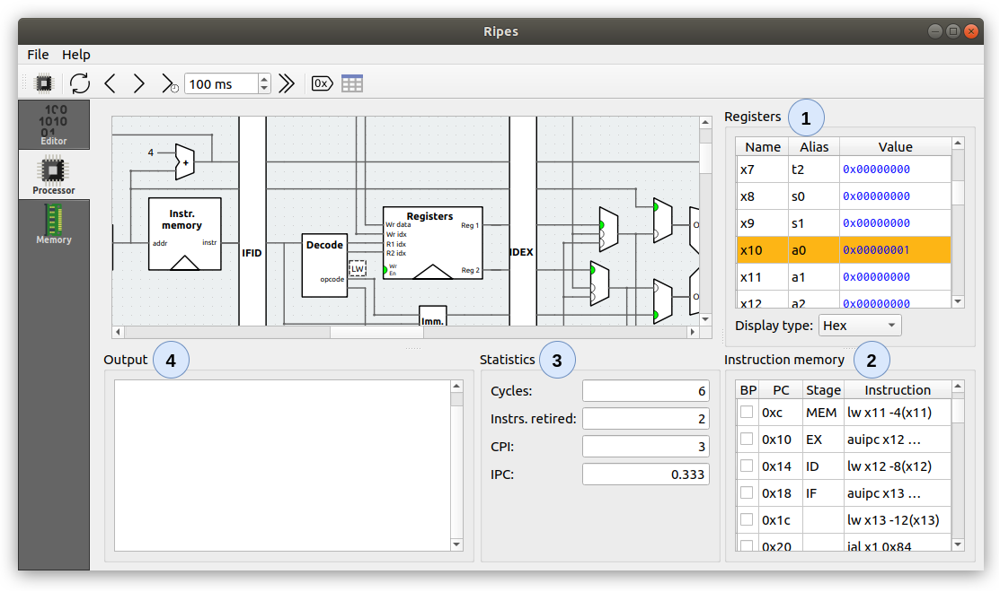
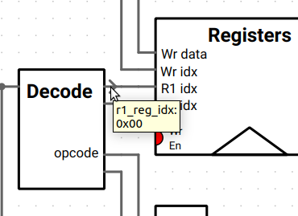
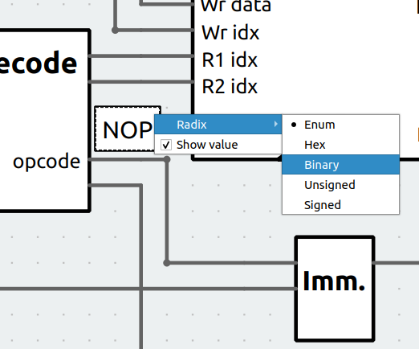
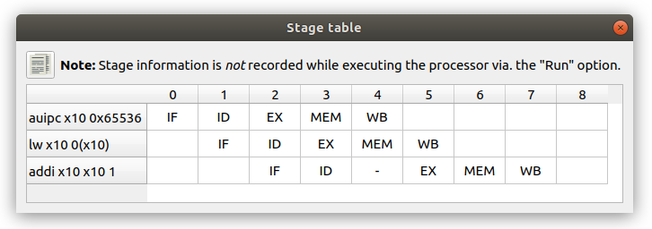
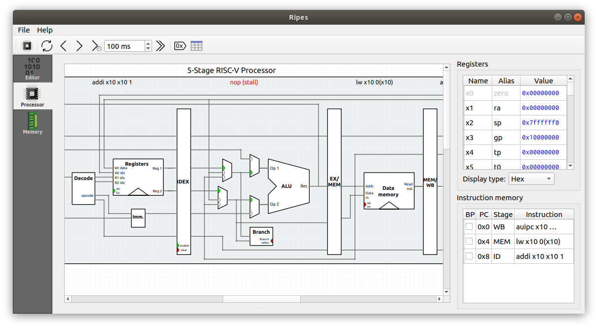
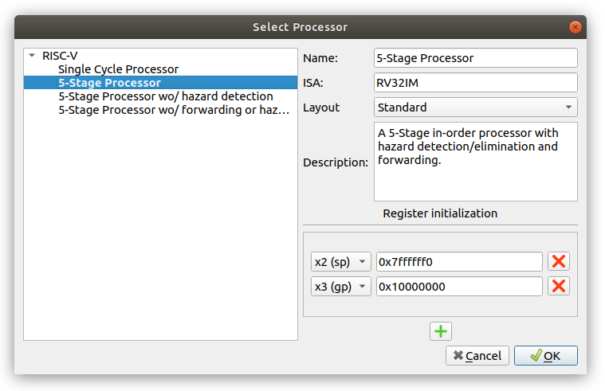
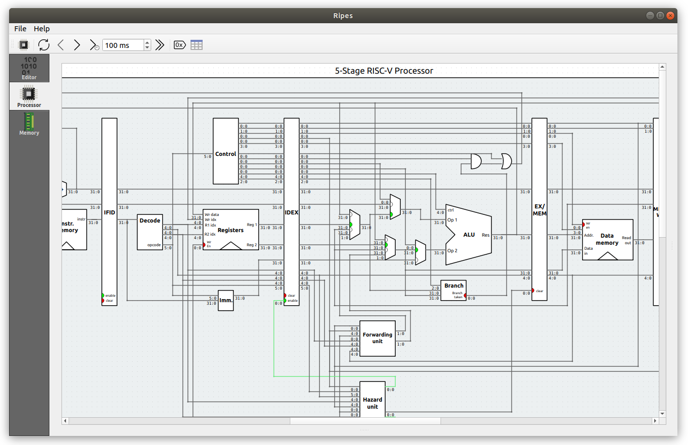

แท็บ Processor
หัวใจของ Ripes — หน้าจอที่แสดงวงจร datapath ของ CPU พร้อมสถานะ register, pipeline และผลลัพธ์ในขณะที่โปรแกรมทำงาน

ส่วนประกอบของหน้าจอ
แท็บ Processor มีพื้นที่ย่อย 4 ส่วนล้อมรอบ processor view:
| หมายเลข | ชื่อ | หน้าที่ |
|---|---|---|
| 1 | Registers | รายการ register ทั้งหมดของ CPU สามารถ คลิกค่าเพื่อแก้ไข ได้โดยตรง register ที่เพิ่งถูกแก้ไขจะถูก highlight ด้วยสีเหลือง |
| 2 | Instruction memory | แสดงคำสั่งของโปรแกรมที่กำลังรัน คอลัมน์ BP สำหรับตั้ง breakpoint, Addr สำหรับที่อยู่, Stage สำหรับขั้นของ pipeline ปัจจุบัน |
| 3 | Statistics | ค่าสถิติต่าง ๆ เช่นจำนวน cycle, จำนวน instruction ที่ retire แล้ว, CPI (cycles per instruction) |
| 4 | Output | ข้อความที่โปรแกรมพิมพ์ออกผ่าน ecall จะปรากฏที่นี่ |
การอ่านสัญญาณใน Datapath
Ripes แสดงสถานะการทำงานของวงจรผ่านหลายวิธี:
- Multiplexer — ขาที่ถูกเลือกจะมีจุดสีเขียว
- Component indicator — เช่น register ถูก clock, branch ถูก taken ฯลฯ
- สัญญาณ Boolean (1-bit) — เส้นสายสีเขียวเมื่อค่าเป็น 1, สีเทาเมื่อค่าเป็น 0
- สัญญาณ multi-bit — กระพริบสีเขียวสั้น ๆ เมื่อค่ามีการเปลี่ยนแปลง
การดูค่าของสัญญาณ ณ จุดใด ๆ
มี 2 วิธีหลัก:


เคล็ดลับ
- กด
Ctrl + Scroll(Mac:Cmd + Scroll) เพื่อ zoom เข้า/ออก - คลิกที่เส้นสายเพื่อ highlight ทั้งเส้น ช่วยให้เห็นเส้นทางสัญญาณในวงจรซับซ้อนได้ชัดเจน
- คลิกขวาที่ป้ายค่าเพื่อเปลี่ยนเลขฐาน (hex, decimal, binary)
ปุ่มควบคุม Simulator
แถบเครื่องมือด้านบนของหน้าจอมีปุ่มควบคุมที่สำคัญ:
| ปุ่ม | หน้าที่ |
|---|---|
| Select Processor | เปิด dialog เลือก CPU model |
| Reset | รีเซตทุกอย่างให้กลับสู่สถานะเริ่มต้น (PC = entry point, memory = ค่าเริ่มต้น) |
| Reverse | ย้อนกลับ 1 clock cycle (มีประโยชน์มาก!) |
| Clock | ทำงาน 1 clock cycle ทีละก้าว |
| Auto-clock | รันอัตโนมัติด้วยความถี่ที่กำหนด หยุดเมื่อพบ breakpoint |
| Run | รันโปรแกรมจนจบ ไม่อัปเดต GUI เพื่อความเร็วสูงสุด เหมาะกับงาน profiling |
| Show stage table | แสดงตาราง pipeline stage แต่ละ cycle |
ข้อสังเกต
ขณะใช้ Run ข้อมูล stage table จะ ไม่ ถูกบันทึก ถ้าต้องการดูตาราง pipeline ให้ใช้ Clock หรือ Auto-clock แทน
การอ่าน Pipeline Stage Table

ตารางนี้แสดงว่าในแต่ละ clock cycle, instruction แต่ละตัวอยู่ใน pipeline stage ไหน:
- เซลล์ที่มี
-หมายถึง stage ถูก stall ไว้ - คำว่า
nopที่เป็นสีแดงเหนือ stage หมายถึง pipeline ถูก flush (เช่น branch ผิดทำนาย)

การเลือก Processor Model

Ripes มี CPU model ให้เลือกศึกษา 5 รุ่น โดยซับซ้อนขึ้นเรื่อย ๆ:
| Model | ลักษณะ | เหมาะกับ |
|---|---|---|
| Single Cycle | 1 instruction ใช้ 1 cycle ทำได้ทุก stage ในรอบเดียว | การเรียนรู้พื้นฐาน datapath |
| 5-Stage w/o Forwarding & Hazard Detection | Pipeline แต่ไม่มีการจัดการ hazard เลย | เห็นปัญหา data hazard ชัดเจน |
| 5-Stage w/o Hazard Detection | มี forwarding แต่ไม่มี hazard detection | เห็นข้อจำกัดของ forwarding |
| 5-Stage Processor | Pipeline สมบูรณ์: forwarding + hazard detection | มาตรฐานสำหรับวิชา CompArch |
| 6-Stage Dual-issue | Pipeline 6 stage รัน 2 instruction พร้อมกัน | ศึกษา superscalar เบื้องต้น |
การปรับแต่ง Processor
- ISA Exts. — เปิด/ปิด instruction set extensions (เช่น M สำหรับ multiply/divide, C สำหรับ compressed instructions)
- Layout — เลือกระหว่าง Standard (มุมมองแบบง่าย) หรือ Extended (เห็น control signal และ wire bit-width)
- Register initializations — กำหนดค่าเริ่มต้นของ register ทุกครั้งที่ Reset
